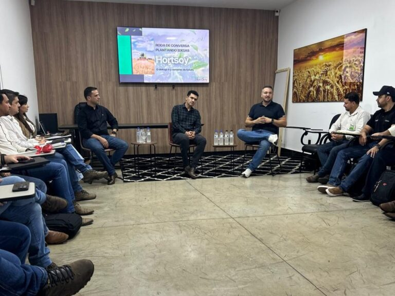
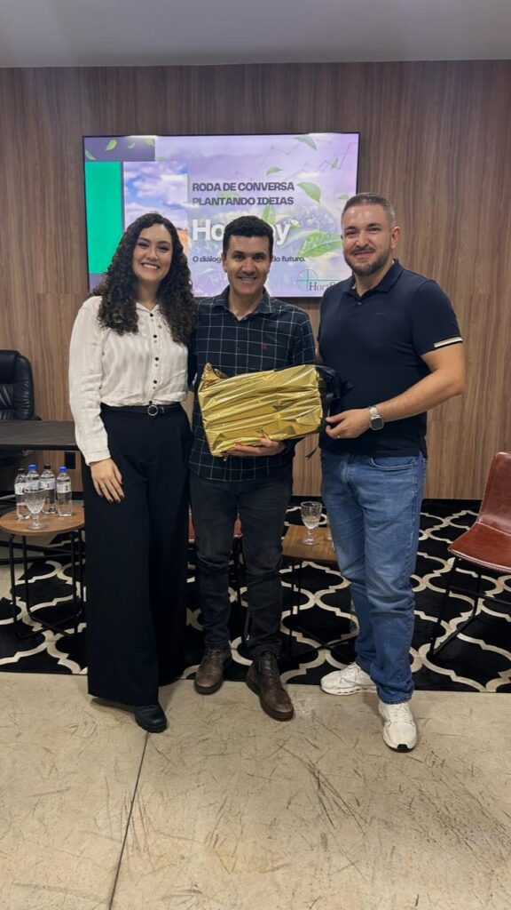

Plantando Ideias – Um Encontro Inspirador no Grupo Hortsoy


🌱 Plantando Ideias – Um Encontro Inspirador no Grupo HortSoy 🌱
Cultivando ideias, fortalecendo lideranças.
No dia 5 de junho de 2025, vivemos um momento especial em nosso Escritório de Treinamento. Nesta data, realizamos a primeira edição da Roda de Conversa Plantando Ideias, um encontro organizado pela nossa psicóloga corporativa, Camila Matos, voltado especialmente ao time de gestores e lideranças do Grupo HortSoy.
Semeando inspiração com histórias reais 🚜💚
Conectando conhecimento e oportunidades no agronegócio.

Foi uma oportunidade única de troca e aprendizado, na qual tivemos o privilégio de receber convidados muito especiais:
Eliesio Carlos Rodrigues, produtor rural da Mult Culturas e grande parceiro do Grupo HortSoy, compartilhou conosco sua inspiradora trajetória de empreendedorismo no campo. Daniel Amaral, diretor da empresa UPL, trouxe uma visão estratégica sobre inovação e parcerias de valor no agronegócio. João Luis de Souza, nosso CEO no Grupo HortSoy, dividiu conosco histórias de superação, crescimento e os pilares que sustentam a cultura da nossa empresa.
Cada relato foi uma verdadeira semente de inspiração. 🌾
Nosso time teve a oportunidade de interagir com os convidados, fazer perguntas, trocar ideias e, principalmente, aprender com exemplos reais de coragem, visão e liderança.
Fortalecendo parcerias, cultivando resultados.
Juntos, elevamos a produtividade no campo.
Seguiremos promovendo encontros técnicos e capacitações para continuar impulsionando a excelência no campo!